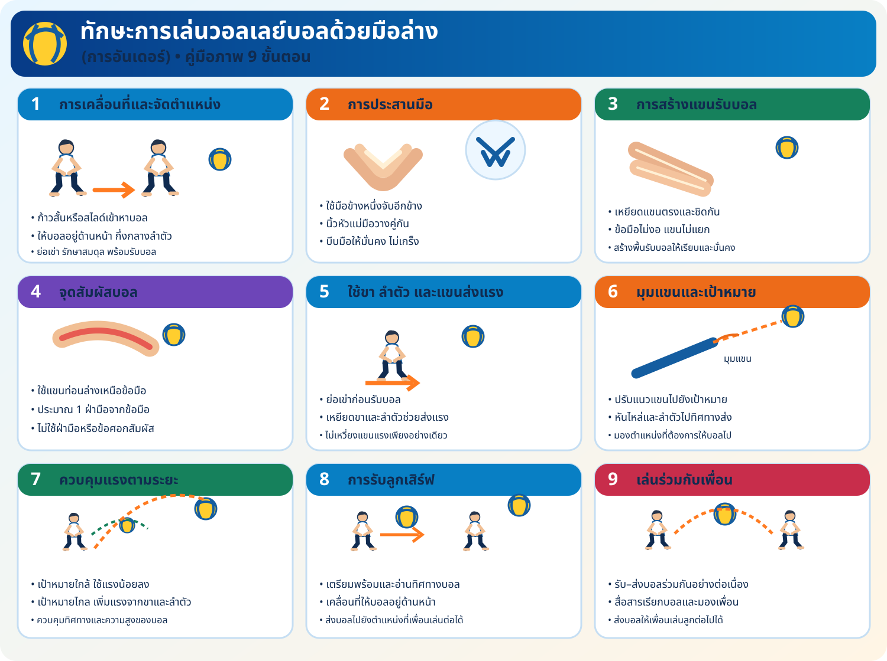

ภาพรวมทักษะการอันเดอร์
ศึกษาภาพสรุปก่อนฝึก แล้วสังเกตการจัดตำแหน่งมือ แขน ขา ลำตัว จุดสัมผัสบอล และการควบคุมทิศทางตามใบความรู้

สรุปจุดสำคัญสำหรับการฝึก
1–3 การเตรียมรับบอล
เคลื่อนที่เข้าหาบอล จัดตำแหน่งร่างกาย ประสานมือ และเหยียดแขนท่อนล่างให้เป็นพื้นรับบอล
4–6 จุดสัมผัสและส่งแรง
สัมผัสบอลด้วยแขนท่อนล่าง ใช้ขาและลำตัวช่วยส่งแรง พร้อมปรับมุมแขนไปยังเป้าหมาย
7–9 นำไปใช้จริง
ควบคุมแรงตามระยะ รับลูกเสิร์ฟ และส่งบอลให้เพื่อนเล่นต่อได้อย่างต่อเนื่อง
ฝึกปฏิบัติทีละขั้น (ทำตามลำดับนี้)
อินโฟกราฟิกด้านบนเป็นเพียงภาพสรุป ควรฝึกตามขั้นตอนต่อไปนี้เพื่อให้เห็นวิธีปฏิบัติจริง เริ่มช้า ๆ ก่อน แล้วค่อยเพิ่มความต่อเนื่อง
ขั้นที่ 1: ฝึกท่าเตรียมและแขนรับบอล
ยืนแยกเท้าประมาณช่วงไหล่ งอเข่าเล็กน้อย โน้มตัวไปข้างหน้า ประสานมือให้มั่นคง เหยียดข้อศอก และให้แขนทั้งสองข้างอยู่ชิดกัน ฝึกค้างท่า 5–8 วินาที จำนวน 5 รอบ โดยยังไม่ใช้ลูกบอล
ขั้นที่ 2: โยนบอลให้ตกบนแขน
ถือบอลไว้ด้านหน้า โยนขึ้นต่ำ ๆ แล้วขยับให้บอลตกสัมผัสแขนท่อนล่างอย่างนุ่มนวล จากนั้นรับบอลด้วยมือ ทำ 5–8 ครั้ง เน้นให้บอลอยู่ด้านหน้าและมองบอลตลอดเวลา
ขั้นที่ 3: ฝึกกับคู่—โยนและอันเดอร์
จับคู่ห่างกันประมาณ 2–3 เมตร คนหนึ่งโยนบอลระดับเอวถึงอกให้อีกคน อีกคนเคลื่อนที่เข้าหาบอล จัดแขน แล้วอันเดอร์กลับไปหาคู่ ทำคนละ 8–10 ครั้ง แล้วสลับหน้าที่
ขั้นที่ 4: อันเดอร์โต้กันต่อเนื่อง
เมื่อทำขั้นที่ 3 ได้แล้ว ให้คู่ฝึกอันเดอร์โต้กัน โดยเริ่มจากระยะใกล้ เป้าหมายคือส่งบอลให้คู่รับได้ง่าย นับจำนวนครั้งที่ทำต่อเนื่องได้ แล้วลองปรับระยะเมื่อควบคุมบอลดีขึ้น
ขั้นที่ 5: เคลื่อนที่ซ้าย–ขวา
ผู้โยนส่งบอลเบา ๆ ไปทางซ้ายหรือขวาของผู้ฝึกเล็กน้อย ผู้ฝึกก้าวเท้าเข้าตำแหน่งก่อนอันเดอร์ ไม่พุ่งหรือเหยียดตัวจนเสียสมดุล ทำข้างละ 5 ครั้ง แล้วสลับกัน
ขั้นที่ 6: ส่งบอลเข้าหาเป้าหมาย
กำหนดพื้นที่เป้าหมาย เช่น กรวยที่วางไว้ห่างพอเหมาะ ฝึกอันเดอร์ให้บอลลอยไปยังพื้นที่นั้น 5–10 ครั้ง เน้นความแม่นยำก่อนความแรง
ความปลอดภัย: เว้นระยะห่างจากกลุ่มอื่น ใช้การโยนบอลเบา ๆ และหยุดทันทีหากพื้นที่ฝึกมีสิ่งกีดขวางหรือผู้เล่นอยู่ใกล้กันเกินไป
แหล่งสาธิตและแนวทางฝึกที่ใช้ประกอบ
- USA Volleyball: วิดีโอสาธิตการอันเดอร์ (Forearm Passing)
- PE Central: จุดสังเกตสำคัญของการอันเดอร์
- Knowitall: กิจกรรมฝึกอันเดอร์กับคู่และกลุ่ม
แนวทางเหล่านี้เน้นท่าเตรียม การสร้างพื้นแขนรับบอล การเคลื่อนที่เข้าหาบอล การฝึกกับคู่ และการส่งบอลให้เป้าหมาย
วิดีโอสาธิต
ดูวิดีโอประกอบ แล้วสังเกตท่าเตรียม การเคลื่อนที่ การสร้างแขนรับบอล และการส่งบอลให้ตรงกับภาพสรุป
เปิดวิดีโอสาธิต เรื่องที่ 3